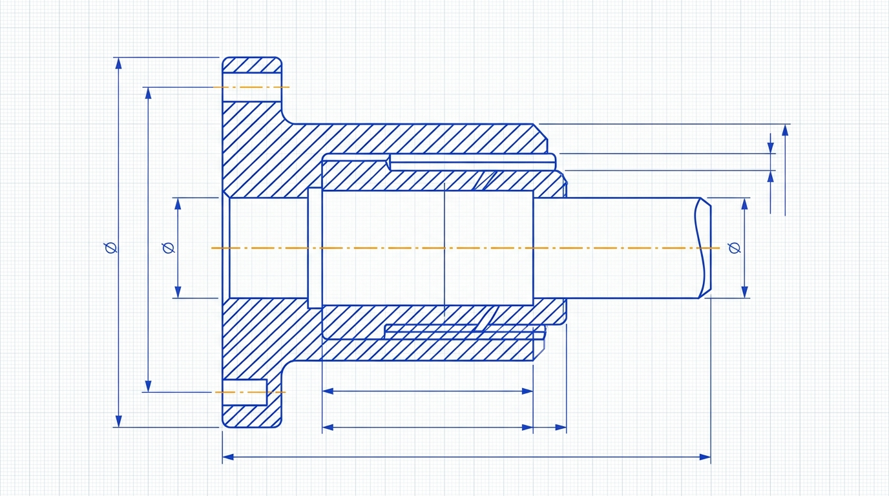
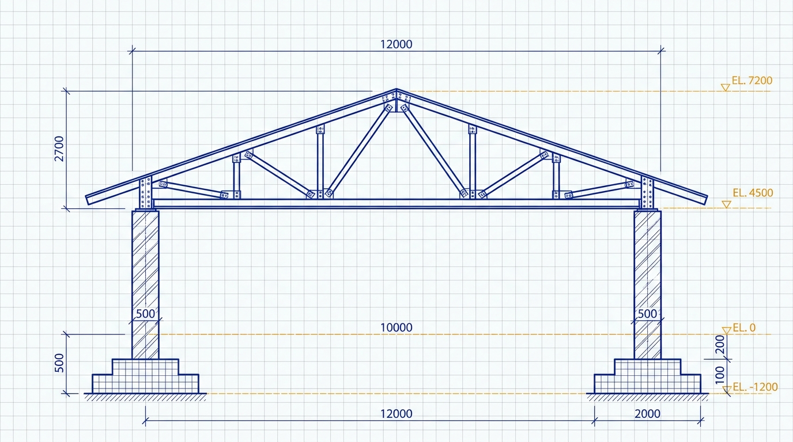
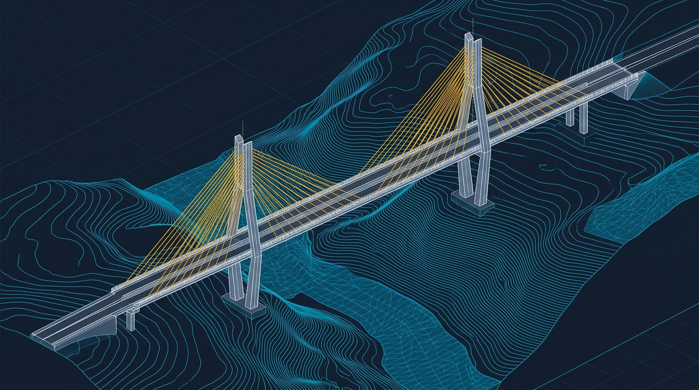

MECÁNICA · ISO 1101Despieces, Tolerancias y Maquinaria
Garantiza la intercambiabilidad de componentes mediante tolerancias dimensionales, ajustes eje-agujero, roscas normalizadas y simbología de soldadura y rugosidad.

MECÁNICA · ISO 1101Garantiza la intercambiabilidad de componentes mediante tolerancias dimensionales, ajustes eje-agujero, roscas normalizadas y simbología de soldadura y rugosidad.

ARQUITECTURA · ISO 7519Coordina estructura, albañilería e instalaciones MEP en edificios y planeamiento urbano, pasando de vistas 2D acotadas a modelos digitales paramétricos BIM.

ING. CIVIL · TOPOGRAFÍAModela la altimetría del terreno mediante curvas de nivel, perfiles longitudinales y transversales para autopistas, túneles, presas y viaductos.
Documenta conexiones eléctricas unifilares y circuitos impresos multicapa (archivos Gerber, huellas SMD, vías y máscaras antisoldante).